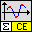
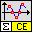

Owning Palette: CE Math
VIs to search for zeros and extrema of functions
| Palette Object | Description | |
|---|---|---|
 |
[ce] Find All Minima and Maxima of f(x).vi | Searches for all local minima and maxima of a 1D function in the specified interval. In addition, the VI allows specifying additional parameters and evaluating them in formula. |
 |
[ce] Find All Zeroes and Extrema of f(x).vi | Searches for all zeroes and local extrema of a 1D function in the specified interval. In addition, the VI allows specifying additional parameters and evaluating them in formula. |